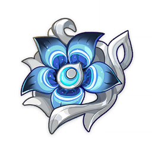
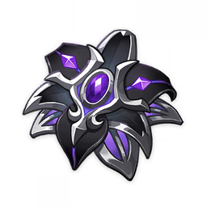

Genshin Impact · Versión 7.2
Análisis del Rol y Escalado
Columbina (Damselette) es un personaje de elemento Hydro originario de Nod-Krai que utiliza Catalizador y se posiciona en el tier T0 (SS) Sub-DPS dentro del rol de Habilitadora Universal y Sub-DPS Hydro de Reacciones Lunares (Escala HP). Su rendimiento en combate gira en torno a este eje principal: Buffs Lunares alcanzan su tope en 35,000 HP; prioridad HP% y ER%.
Para maximizar su aporte en el equipo, la configuración prioritaria combina Nocturno tras el Velo con el conjunto de artefactos Silken Moon's Serenade (4 piezas), respetando la jerarquía de estadísticas Vida% (hasta 35,000 HP) > Recarga (160–180%+) > Prob. Crítica > Daño Crítico > ME. y subiendo sus habilidades en orden: Habilidad Elemental (E) ≥ Definitiva (Q) >>> Ataques Normales.
Mejores Armas
Opciones recomendadas ordenadas por rendimiento según el meta actual y compatibilidad con sus rotaciones:
-
 Nocturno tras el Velo ★★★★★BiS Firma88.2% Daño Crítico; +HP%, restaura Energía y aumenta Daño Crítico de reacciones Lunares.
Nocturno tras el Velo ★★★★★BiS Firma88.2% Daño Crítico; +HP%, restaura Energía y aumenta Daño Crítico de reacciones Lunares. -
 Relicario de la Verdad ★★★★★Alternativa 5★88.2% Daño Crítico, +8% Prob. Crítica y +80 ME.
Relicario de la Verdad ★★★★★Alternativa 5★88.2% Daño Crítico, +8% Prob. Crítica y +80 ME. -
 Jade Sacrificial ★★★★Mejor 4★ Pase36.8% Prob. Crítica y hasta +64% HP Máx y +80 ME fuera de campo.
Jade Sacrificial ★★★★Mejor 4★ Pase36.8% Prob. Crítica y hasta +64% HP Máx y +80 ME fuera de campo. -
 Prototipo Ámbar ★★★★Mejor F2P Forja41.3% Vida%, regenera Energía para su Definitiva y cura al equipo.
Prototipo Ámbar ★★★★Mejor F2P Forja41.3% Vida%, regenera Energía para su Definitiva y cura al equipo. -
 Códice de Favonius ★★★★Opción 4★ Batería45.9% Recarga de Energía y partículas blancas para el equipo.
Códice de Favonius ★★★★Opción 4★ Batería45.9% Recarga de Energía y partículas blancas para el equipo.
Mejores Sets de Artefactos
Combinaciones de 4 piezas o mezclas de 2 piezas para maximizar su contribución:
-

Silken Moon's Serenade (4 piezas) BiS Soporte Lunar+20% ER (2p); +60/120 ME al equipo y +10% Daño Lunar activable off-field.
-
 Aubade of Morningstar and Moon (4 piezas) BiS Daño Off-Field
Aubade of Morningstar and Moon (4 piezas) BiS Daño Off-Field+80 ME (2p); +20%/60% Daño de Reacción Lunar mientras está fuera de campo.
-

Night of the Sky's Unveiling (4 piezas) Variante Driver+80 ME y +15%/30% Prob. Crítica si juega en campo (Florecimiento Lunar).
Estadísticas Principales y Secundarias
Atributos prioritarios en artefactos para un balance óptimo de daño o soporte:
| Pieza | Estadística Principal |
|---|---|
| Reloj (Arenas) | Vida% / Recarga de Energía |
| Cáliz | Vida% (o Bono Hydro en Vaporizado) |
| Corona | Prob. Crítica / Daño Crítico |
Prioridad de Subestadísticas
- Vida% (hasta 35,000 HP) > Recarga (160–180%+) > Prob. Crítica > Daño Crítico > ME.
Prioridad de Talentos
Habilidad Elemental (E) ≥ Definitiva (Q) >>> Ataques Normales
Objetivos de Estadísticas (Nivel 90)
Valores de referencia verificados para evaluar el equipamiento de Columbina (Damselette) en nivel 90 con artefactos de 5 estrellas:
| Atributo | Meta Recomendada |
|---|---|
| Vida | 30,000 – 35,000 HP |
| Ataque | 1,100 |
| Defensa | 750 |
| Maestría Elemental | 100 – 200 ME |
| Recarga de Energía | 160%+ (arma ER) / 180%+ |
| Balance Crítico | 60% – 80% CR / 160% – 200%+ CD |
Talentos de Combate y Materiales (Nivel 1 al 10)
Habilidades principales de Columbina (Damselette) y desglose exacto de libros, materiales y Mora para mejorar sus talentos:


Composiciones de Equipo Recomendadas
Alineaciones con mayor sinergia elemental y amplificación de daño en el Abismo y Teatro Fantasía:
Materiales de Ascensión (Nivel 1 al 90)
Recursos totales requeridos para desbloquear las 6 fases de ascensión de Columbina (Damselette). Coste total de Mora en ascensiones: 420.000 Mora.


Sinergias y Guías Relacionadas
Explora las fichas de armas, artefactos y materiales de los principales compañeros de equipo para Columbina (Damselette):